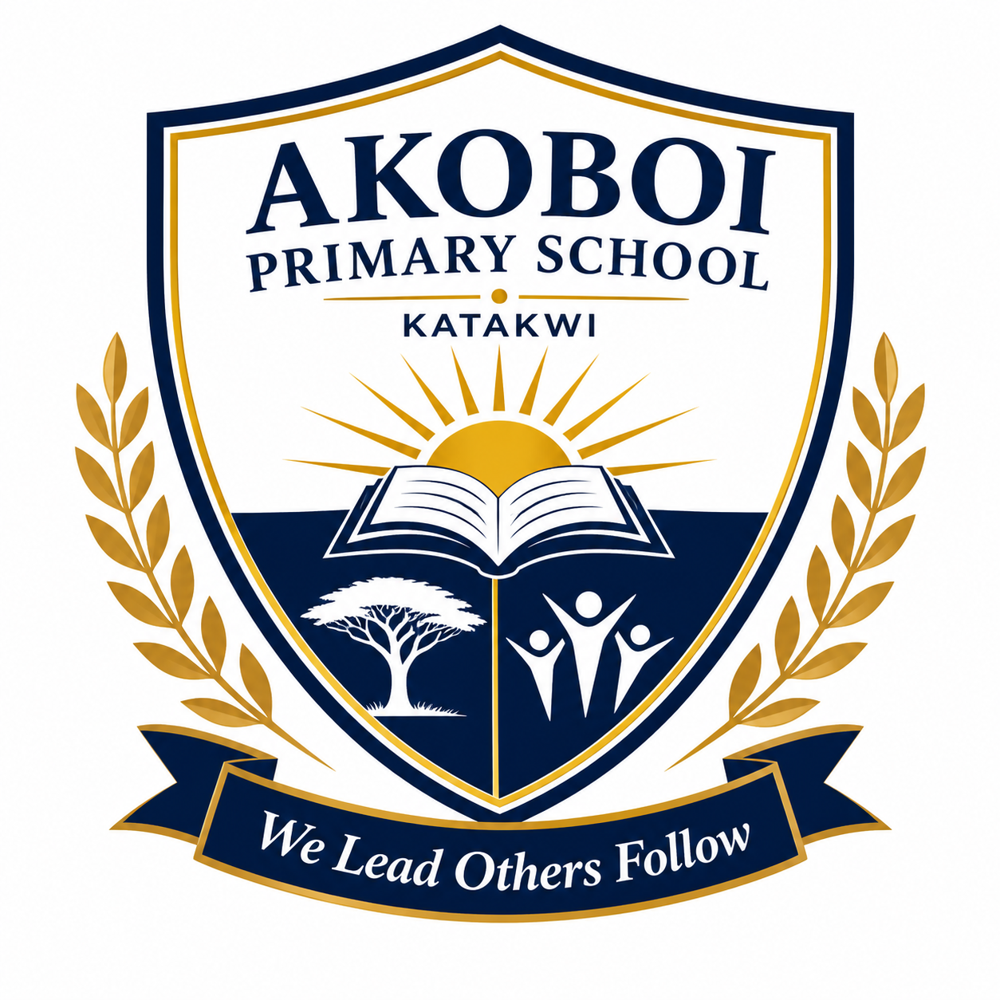
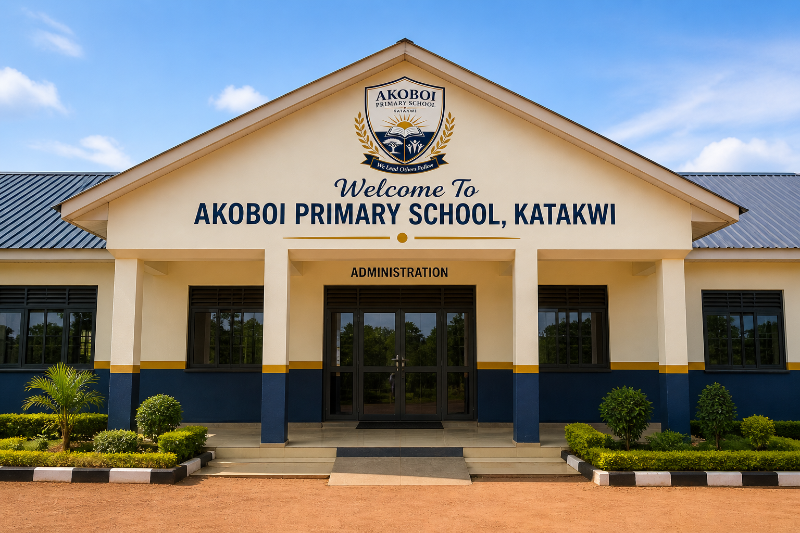

WELCOME TO AKOBOI PRIMARY SCHOOL, KATAKWIManaging Tomorrow From Today |
|---|
 |

| Prepare for your future career Discover your potential with our practical, future-focused education. Our competency-based approach builds real-world skills, sharpens critical thinking, and provides industry expertise-empowering you to lead, innovate, and excel in a competitveworld. Your journey to success starts here! |
| Start building your future today! Join Akoboi Primary School, Where we cultivate innovation, critical thinking and practical skills. Our education prepares students for academic exellence, successful careers, a bright future and also to be creative enough to face tomorrow without fear |
© Developers@Akoboi Primary School.